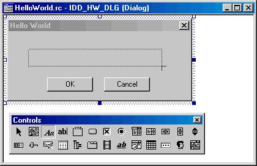

Adding Controls to your Dialog, Tabs, or Wizard Pages
If you did not choose to create an empty project then the Origin Dialog AppWizard creates, among other things, a dialog resource when it closes. If you chose to create a tabbed dialog (or a wizard), it creates an additional resource for each tab (or page) you specified on the fourth page of the AppWizard.
To add controls to your dialog, tabs, or wizard pages, perform the following steps:
- Open the resource (main dialog, tab, or wizard page) you want to add controls to by double-clicking on the dialog icon in the Workspace window that corresponds with the resource. The dialog (or tab or page) displays in the Microsoft Visual C++ development area.
- Use the Controls toolbar to add the desired controls (resources) to your dialog. Click the Control toolbar button for the control you want to add and then drag out its shape on your dialog resource in the development area. When you let go of the mouse button the newly added control will appear on your dialog. The picture below shows the Controls toolbar with the Static Text button depressed and a static text object being drawn (dragged out) on a main dialog.

Note: If the Controls toolbar is not visible, right-click anywhere on the Visual C++ toolbar spacer and check the Controls menu item. See the section Microsoft Visual C++ Controls Supported by Dialog Builder for a list of controls supported by Dialog Builder.